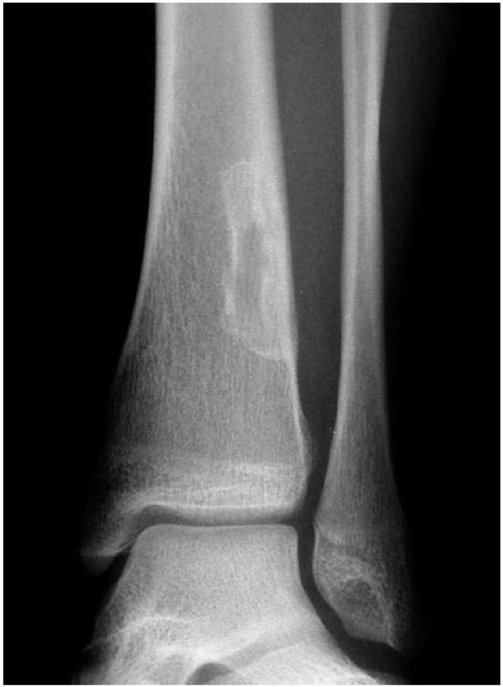

‹R+
R+ Ortopedia
Bia R2, Lucas R1, Rafa R3, você
Bia R2
Margem nítida, mas a lesão
incha o osso e afina a cortical. Não é latente: é
ativa, B2. E expansiva assim na fíbula é
aneurismático.
13:01
Rafa R3

Campbell 15ª ed., Fig. 26.2, p. 870: fibroma não ossificante, o B1 (latente)
Compara com o B1: halo branco grosso e o osso não abaula.
Segundo o Campbell, o cisto ósseo aneurismático da fíbula proximal é o exemplo do estágio 2, ativo, que cresce e pode expandir e afinar a cortical.
Campbell's Operative Orthopaedics, 14ª ed., cap. 24, p. 893 e 894
13:03
Rafa R3
DB2 e cisto ósseo aneurismático.
A erra os dois. B acerta o estágio e erra o diagnóstico. C acerta o diagnóstico e erra o estágio.
13:04
Então o B é de benigno e o número é o estágio. Anotado.
13:05✓✓